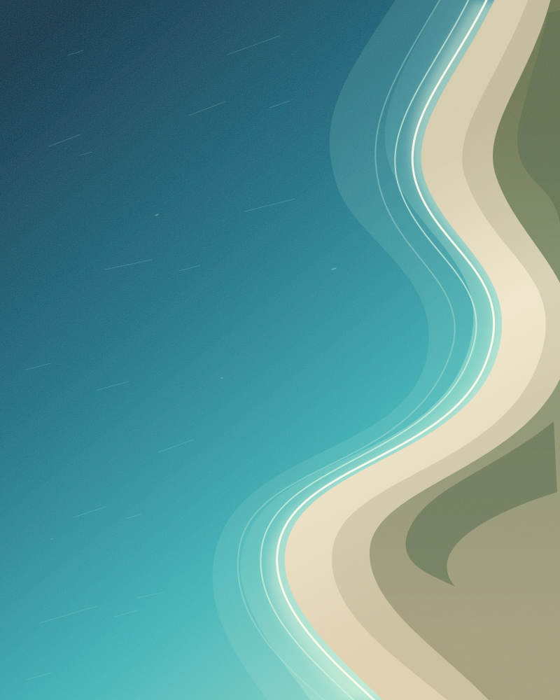
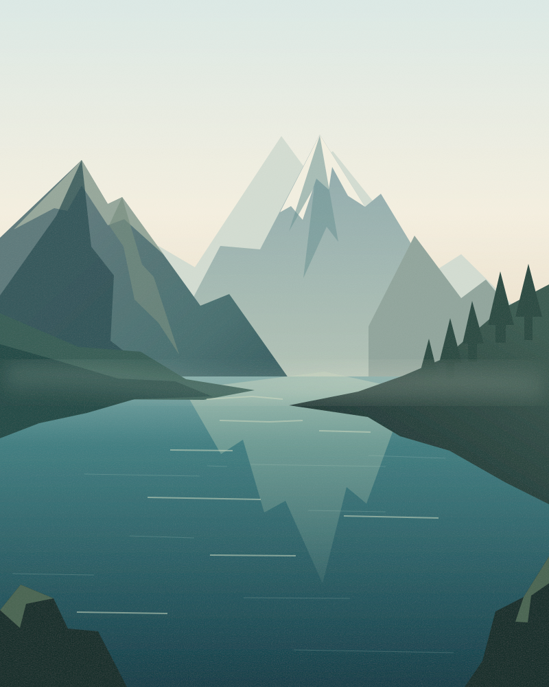
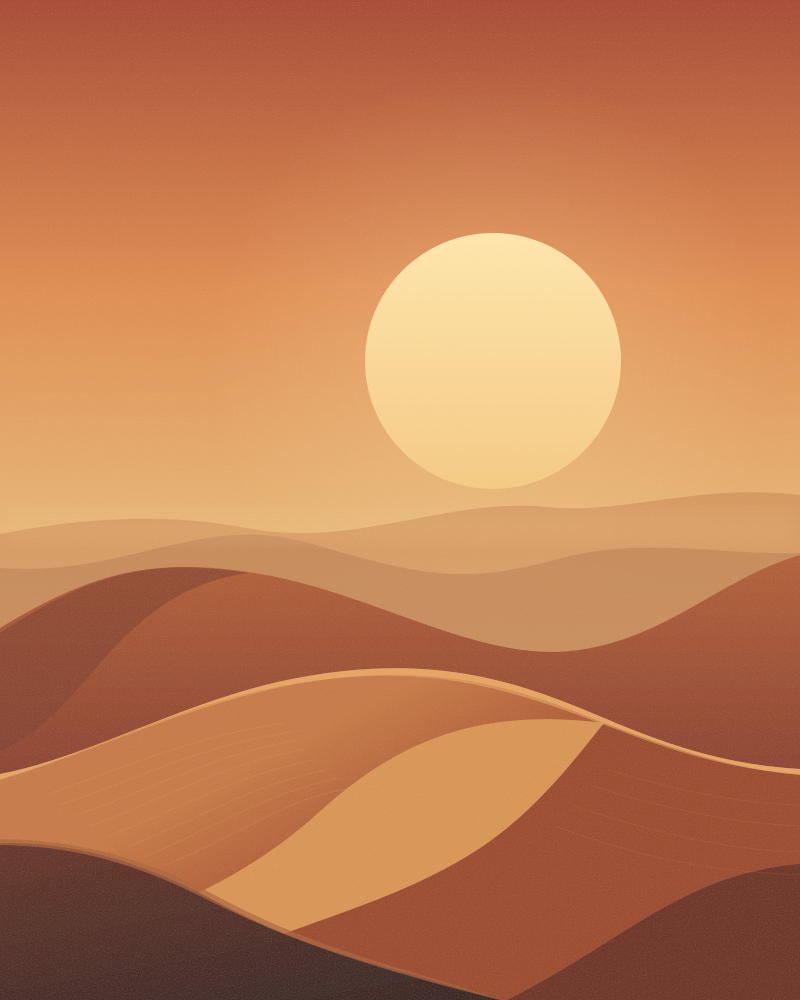

网页版
偶尔遇见一篇喜欢的笔记，
打开浏览器，就能开始。
- 单篇原图、视频、实况与文案
- 勾选图片，批量打包 ZIP
- 无需安装，单篇下载免费

原图，完整保留。

每一种心动，都有归处
一篇笔记里的精彩，
用它原本的模样保存。
保存无水印原图。单张下载，或勾选喜欢的图片一次打包，让每一处细节都经得起放大。
桌面版还支持一次复制多张独立原图，粘贴到支持多文件的应用。
简单，自然而然
中间，只需要三步。
打开小红书笔记，复制分享链接。
长链接、短链接、整段分享文案都可以。
粘贴到输入框，点击解析。
图片、视频与文案，清楚地呈现在眼前。
选择想留下的内容，下载到本地。
此刻的灵感，随时都能再看。
桌面版 · 主页批量下载
粘贴作者主页链接，将当前账号可见的笔记
逐篇保存。原图、视频、实况与文案，
各就各位。
主页批量需有效会员、已授权设备及小红书登录。
下载范围取决于账号可见内容与平台访问状态。
继续与重试，也保留原来的序号。
文件整理示意 · 实际媒体以原笔记为准
随手收藏，或认真整理
轻量使用，打开网页。
长期收藏，让桌面版陪你。
偶尔遇见一篇喜欢的笔记，
打开浏览器，就能开始。
从一篇笔记到作者主页，
建立自己的本地灵感库。
实况保存为 JPG + MP4 配对素材；不会自动转为 Apple Photos 原生 Live Photo。
可用视频清晰度由原笔记提供。查看安装与使用说明
使用 ← → 或空格切换 · Esc 退出